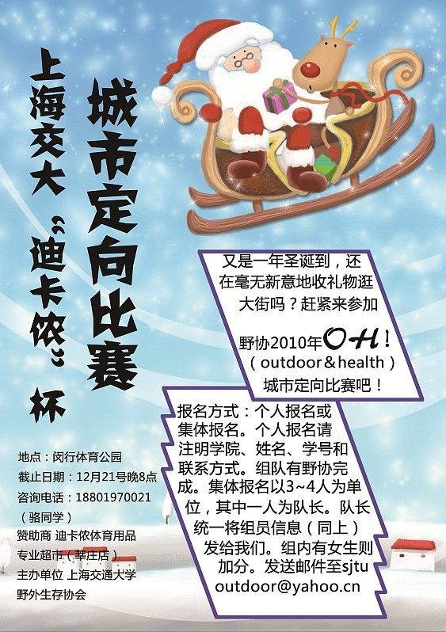
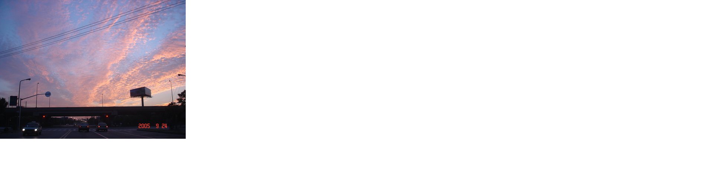
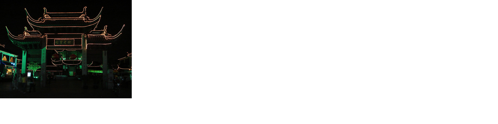
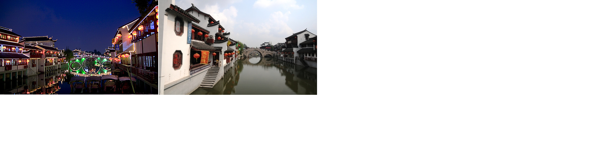
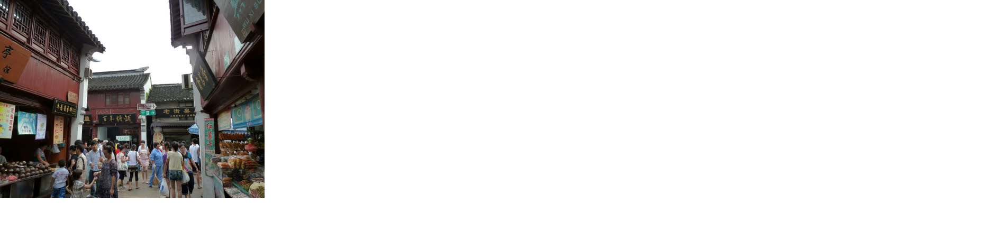
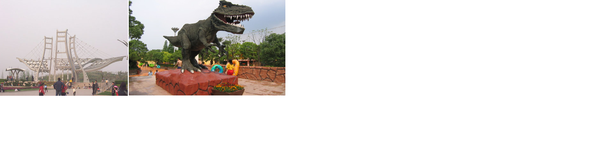
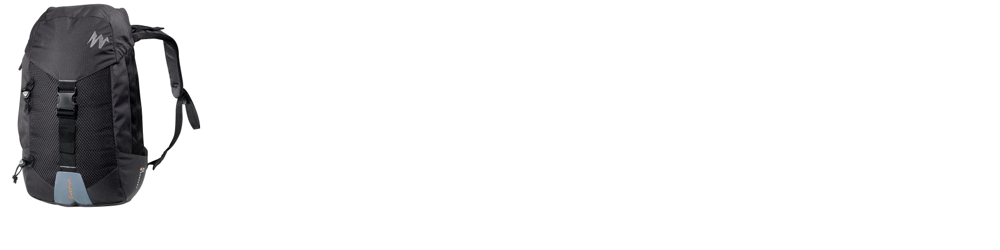
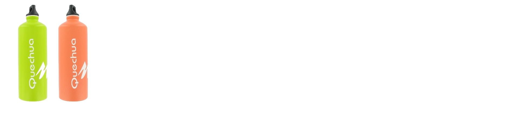
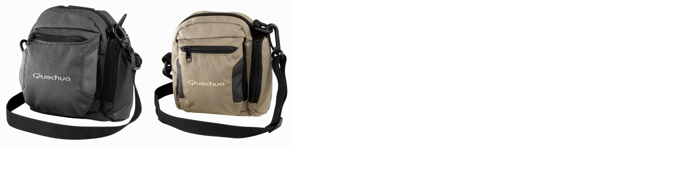

发信人: OutdoorAssoc (交大野协官方ID), 信区: outdoor
标 题: “Outdoor&Health”城市定向大赛开始报名啦！
发信站: 饮水思源 (2010年12月15日00:02:02 星期三)
上海交通大学“Outdoor&Health”城市定向大赛
 screen.width - 200){this.width = screen.width - 200}">
报名截至: 12月21日晚8点
比赛时间：12月26日下午1点半
活动简介：城市定向是由野外定向发展过来的全新运动，在国内具有广阔的发展前景，是
一项非常健康的智慧型体育项目。定向活动被教育部和国家体育总局列入全国大学生运动
的一部分。本次活动得到了上海交通大学校团委的大力支持，及交大校内各社团团的倾情
加盟。这是交大二度举办城市定向，去年的首届城市定向得到了学校的肯定，参赛者的一
致好评。
本次城市定向运动将以闵行体育公园为中心，在周围5公里范围内设点二十余处，包括七宝
老街、七宝中学、七莘路、漕宝路、以及大小街道。参赛者从闵行体育公园出发，自行设
计路线，完成任务单上全部十个点的任务（问答题或游戏执行），在规定时间内回到起点
并且积分最高的六支队伍为优胜。参与者在奔跑和寻找过程中，将与市民零距离接触。此
次比赛精彩多多，奖品多多！
七宝精美图片见下：
七宝的晨曦
 screen.width - 200){this.width = screen.width - 200}">
七宝老街
 screen.width - 200){this.width = screen.width - 200}">
老街的夜景和白天
 screen.width - 200){this.width = screen.width - 200}">
老街一角
 screen.width - 200){this.width = screen.width - 200}">
闵行公园
 screen.width - 200){this.width = screen.width - 200}">
赛区半径：5公里
活动时间：2010.12.26 下午一点半
途经——七宝老街、七宝中学、七莘路、漕宝路、以及还有无数隐藏于闹市中的宁静小街
活动流程：
13：30 PM 比赛开幕，赞助商可以设摊进行互动活动
14：00 PM 定向活动正式开始
14：30 PM 所有队伍出发
16：30 PM 所有队伍回归，颁奖，活动结束
18：00 PM 工作人员完成清理收尾工作
让我们走出寝室
褪去一身的忧烦
追逐满地的阳光
搜索遗落的快乐----
行走，奔跑，寻觅，我们以这样的方式了解上海
穿梭于大街小巷，感受繁华大都市的生活气息
和我们一起“扫街”——
有很多难关等你来攻破，有很多游戏期待你来大展身手！
想体验惊险、刺激的定向之旅吗？
想挑战你的智力、耐力和想象力吗？
想感受团队合作的快乐与激情吗？
想得到最炫最酷的奖品吗？
那么，还犹豫什么，赶快加入我们吧！！
2010野外生存协会圣诞倾情奉献
“O&H”城市定向大赛
现面向全体交大学生火热报名中！
玩过定向越野的同学不要错过，因为这一次将会是你们从未体验过的定向越野！！！
没玩过的同学更不要错过，因为你会因此而爱上定向越野的！！！
本次活动费用由赞助商和协会承担，不需报名费！
诱人奖品如下：
一等奖奖品
简易背包：
 screen.width - 200){this.width = screen.width - 200}">
二等奖奖品
水壶：
 screen.width - 200){this.width = screen.width - 200}">
三等奖奖品
小包：
 screen.width - 200){this.width = screen.width - 200}">
PS：凡参加比赛的同学均能获得限量版的精美比赛纪念T恤！！！
报名方式：发送邮件至sjtuoutdoor@yahoo.cn 咨询电话：18801970021（骆同学）
报名形式：个人报名或集体报名。个人报名请注明自己的学院、姓名、性别、学号和联系
方式，发送邮件即可，组队由野协完成；集体报名以3-4人为单位，其中一人为队长，由队
长统一将组员的信息（如上）发给我们。组内有女生可加分。
--
以热爱户外为荣 以远离自然为耻 以团队合作为荣 以个人主义为耻
以关心妹妹为荣 以目的不纯为耻 以互相帮助为荣 以自私自利为耻
以保护环境为荣 以破坏自然为耻 以朴实户外为荣 以攀比装备为耻
以积极探索为荣 以盲目冒险为耻 以四海一家为荣 以狭隘户外为耻
※ 来源:·饮水思源 bbs.sjtu.edu.cn·[FROM: 59.78.124.53]
※ 修改:·OutdoorAssoc 于 2010年12月15日00:19:45 修改本文·[FROM: 59.78.124.53]
※ 修改:·OutdoorAssoc 于 2010年12月15日00:20:44 修改本文·[FROM: 59.78.124.53]
|